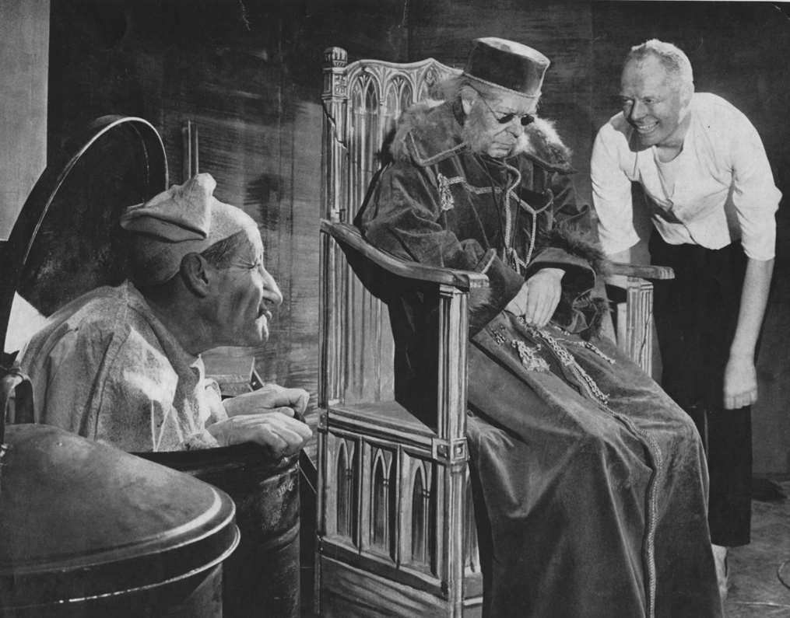

批判理论是20世纪60年代欧洲学生运动的重要思想动力。然而在美国，批判理论绝大多数影响深远的作品直到20世纪70年代才得到翻译。当时《终极目标》和《新德国评论》等杂志开始拥有读者，也开始宣传其最重要的代表人物。关于异化、支配自然、倒退、乌托邦以及文化产业的复杂观点使批判理论更贴近年轻知识分子，他们在动荡的年代走向成年，正视图理解身边在发生什么。但青年的反叛和团结借助了文化产业。这使其激进特征更为真实。即使在奥斯威辛集中营之后，艺术也并不是一项失败的事业，这一点很快便显而易见了。文化与幸福意识的联系从来没有——或者还没有——像某些人也许愿意相信的那样绝对。
20世纪60年代，激进人士依然在马克思主义语境下理解批判理论。赫伯特·马尔库塞坚持认为，改变发达工业社会需要工人阶级采取行动。但他感到，工人阶级的观念已经受到文化产业、经济收益以及政治权威的操控。革命意识只可能在其阶层之外产生。妇女、有色人种、体制边缘的反帝国主义运动、知识分子以及不循规蹈矩之人可能为工人阶级提供的不只有革命火花，而且有更难以捉摸的东西：新感性。这些新的革命催化剂体现出安德烈·布勒东最初提出的“大拒绝”。
这里，批判理论又一次显示出它同现代主义的联系，布勒东是欧洲先锋派的传奇人物和超现实主义的指路明灯。他呼吁反抗日常生活的固定习惯，要求无产阶级对国家采取直接行动。但布勒东首先支持一种拒绝熟知、一致和传统的艺术形式。他的美学致力于抨击叙事性的和线性的理性。
本雅明和阿多诺在20世纪30年代都已对超现实主义着迷。他们也都认同蒙太奇、意识流、顿悟以及无意识的解放。尤其本雅明认为超现实主义唤起了一种“革命陶醉”，它的敌人是资产阶级社会的日常生活。大拒绝被马尔库塞理解为应对发达工业社会的残酷、剥削和非人道价值观的鼓舞人心的反抗。
作为他最受欢迎的作品之一，《论解放》认为大拒绝产生了乌托邦感性。声称青年反叛者体现出了这一点，无疑是夸大其词。边缘群体也许从来不是那么边缘。或许更好的说法是新的社会运动迅速发展——部分由于劳动力市场的紧张——剥夺了他们的革命和乌托邦矫饰。他们最大的成就是通过法院和政治立法实现的。但过于犬儒是很容易的。战争和“军工联合体”遭到的反感随处可见。人们对公开透明和民主问责提出激进的要求。林登·约翰逊总统以“伟大社会”计划回应来自基层社区组织和新社会运动的压力。在南方为民权而战的“自由乘客”是局外人。在欧洲和拉美，鲁迪·杜契克和丹尼·科恩——本迪特等激进知识分子的追随者点燃了以工人自治（autogestion）民主理想为标志的1968年大规模罢工浪潮，这一理想又回到了工人协会和巴黎公社。
环境主义、动物权益以及对大男子主义的抨击都是新感性的产物。激进的教育改革结合了文化现代主义者对改造日常生活的要求。性观念和种族关系发生了变化。生活品质作为一个基本问题浮现出来——而且审美观念无疑也发生了改变。新左派表现出对于主体性的高度认同。有色人种、妇女、同性恋和知识分子都试图去理解世界，并衡量自身存在的意义，进而为自身设定目标。新左派运动是将文化转型置于首位的第一波群众运动。正是这一点导致它贴近批判理论和法兰克福学派。
20世纪80年代连同“9·11”之后美国保守派对敌对文化进行的抨击，带来了以民族主义、军国主义和帝国主义为名义的对福利国家和公民自由的全面抨击。马尔库塞在《反革命与造反》（1972年）中预见到了类似情况。他预测到保守派试图破坏与新感性相关联的政治利益和理想。他本人的感性与其说发生了变化，不如说是重点发生了转移。他在最后一部获得出版的作品《审美之维》（1978年）中指出，其“受之于西奥多·W.阿多诺美学理论的恩惠无须任何特别的感谢了”。希望一息尚存——但它正在消退。明显具有政治性的现代主义艺术（如布莱希特的艺术）中体现的大拒绝此时退出了舞台。美学此时应当肯定的不是一场运动的意识，也不是某种新形式的历史主体，而是真正的个人，他们的生存被一些比1968年运动的反叛者所想象的更为强大的力量置于危险境地。
自始至终，乌托邦与其说是既已实现的成果，不如说是对超越的渴望。尤其在文化产业界定公共生活的地方，在概念持续被简化而理想变为陈词滥调的地方，培养这种渴望或许就其本身而言具有了价值。这当然是马克斯·霍克海默在晚年逐渐相信的。他也清楚，个人经验很容易被操控，对超越的寻求之中也并非理所当然地具有批判冲动。既然有毒品、传道者、狂热崇拜，那么也总是会有救赎和幸福的承诺。文化产业靠着幸福蓬勃发展。这种幸福是标准化的，并且被预先包装好。但真正的幸福是向悲惨的现实做出抗争。它只讨论特定个体的经验，如宗教的恩典观念。
在《自我与自由运动》（1936年）中，霍克海默坚称无条件的幸福不可能存在——只可能存在对它的渴望。这种渴望拒绝了商品形态和工具理性将定性的转变为定量的以及将神圣的转变为世俗的所有尝试。我们每一个人对于不朽、美、超越、救赎、上帝——或霍克海默最终提出的“对全然的他者的渴望”都有本能欲望。他不作任何承诺，不描绘任何仪式，也不提供任何教派。但这种渴望为反抗全面管制的社会并肯定个性提供了基础。对于全然的他者的渴望完全不同于有组织的宗教。然而，它对否定的依赖结合了它对天堂的希望以及在经验上肯定自性的能力。
恩斯特·布洛赫曾经提出，真理是一种祈祷。而无法表达的东西也许最好以音乐来表达。它提供了同我们内心深处的邂逅。同样，在经典的《新音乐哲学》（1958年）中，当阿多诺坚称暗示“某个人的回归”是“所有音乐都可以表达的，即便是在一个理应衰亡的世界”时，他显然指的是拯救。所有这一切都倾向于以一种方式将否定和乌托邦与存在经验联系起来。剥去所有的决心和调和，宗教、艺术和哲学可以引出（尽管没有定义）清晰和希望的暗示。黑格尔认为，历史的进步使心灵的这些领域越加泾渭分明。但这种观点被法兰克福学派颠倒了。宗教、艺术和哲学此时在他们提出的无法表达的真理中几乎是可以互换的。
无论它们之间存在什么差异，都没有任何实际意义。自由是模仿不了的——如同上帝——地狱也是如此。当阿多诺提出“奥斯威辛之后再无诗歌”这句《文化批评与社会》（1951年）经常被引用和修正的结语时，表达的正是这种态度。犹太教的宗教训谕此时具有了美学形式。邪恶的化身如同善良的化身一样，只能被暗示，无法被描绘：上帝的任何客观化都不可能足够完美，而大屠杀的任何客观化也不可能足够骇人。当阿多诺在《最低限度的道德》中写到“文化只有从人那里退出，才能对人忠诚”时，提出了这一态度的激进含义。
法兰克福学派流露出欧洲现代主义气息。从19世纪最后25年直至1933年纳粹取胜，似乎一个国际先锋派一直在对抗新兴的大众社会及其显著的官僚主义、标准化、科学理性以及商品形态。无数印象派艺术家、立体派艺术家、表现主义者、未来主义者、达达主义艺术家以及超现实主义者都试图重新体验世界。他们以乌托邦想象和个性解放的名义通过铺天盖地的哲学——美学宣言向所有有关艺术的“现实”目标的东西发起进攻。反抗从政治领域转移到文化领域。或者就法兰克福学派来看，哲学提供批判性思考的部分与美学所强调的体验热情相融合。否定成为先验反抗的节点，主体性在此向虚假条件的本体论提出质疑。
法兰克福学派始终对组织化政治保持怀疑。其异化和物化观念中固有的看法是，将理论同实践联系起来只会推进可怕的简单化计划。反智主义的危险似乎显而易见，在《批判模型 II》（1969年）所包括的《屈服》及其他文章中，阿多诺表达了他对那些声称“已经说够了”的人们的轻蔑。考虑到文化产业呈现实践活动的方式，他们希望“参加”的实践永远都并非足够激进。年轻人需要从极权主义运动及其宣传机构和对个人的蔑视中吸取教训。肯定个性是对全面管制的社会的最佳回应。但所有这一切都有某些自利的成分。
证明目的与手段之间似乎具有合理联系的活动，与行动本身或阿多诺所谓的“行动主义”不是一回事。理论当然不能简化为实践。但这并不意味着它应该将阐明变革的限制和机会抛诸脑后。政治行动并不总是引起反思，这是重要的一课。阿多诺教授这一课是对的，但他对“思考”的号召听起来如同迂腐的中小学教师发出的严厉指令；这成为高居争论之上的代名词。屈从始终保持原样，即拒绝参与，并且退出有组织的体制改革计划。
阿多诺收录在《文学笔记》（1969年）中题为“参与”的文章，是对贝尔托特·布莱希特和让——保罗·萨特的直接抨击。他们都同情共产主义，也都强调有必要将文学与关于政治潮流的党派观点联系起来。萨特在《什么是文学？》（1947年）中写道，没有一本伟大的小说能支持反犹主义。着眼于布莱希特的说教式剧作，比如《决定》（1930年）中的著名语句“党有上千只眼睛，我们只有两只”，阿多诺反驳道，也没有一部伟大的小说可以赞扬莫斯科审判。他一直认为，政治参与文学这一观点是自相矛盾的。它既不能对总体性进行批判（因为艺术作品在政治上总是党派性的），也不能提供任何有意义的乌托邦展望（因为真正的幸福始终超然于对象化）。
描绘一个完全管制的社会——一个没有出路和意义的噩梦般的官僚主义世界——中主体性被摧毁的能力，恰恰使弗兰兹·卡夫卡的作品对这一派批判理论产生重要影响。卡夫卡总是有些难以捉摸的东西。是什么呢？不仅是主体性，无论是人物的，还是旁观者的，而且还有激发它的方式。
《美学理论》（1969年）提出了抵制一切对象化的主体性、自由和乌托邦诸概念。阿多诺的巅峰之作——显示了他的非凡智慧并证明了他持久的吸引力——强调了作为社会单体的艺术作品中产生的紧张关系。康德认为审美体验表现出一种有目的的无目的性，因此存在于相同的现象之中，这种现象按照马克思的看法表现为特定的压迫形式。形式与内容、反思与经验、技术与灵感、乌托邦希望与人类学的否定之间的冲突都融入这部作品之中。艺术作品因此是冲突的张力的“力场”。
批判美学应当强调这些张力。它的真正目标不是通过对人物、叙事和主题的某种常见认同建立对世界的共同认识，相反是强化经验。根据阿多诺的看法，这就是艺术的典型瞬间是“焰火”的原因。
没有多少艺术家有能力创造这一瞬间，而阿多诺论塞缪尔·贝克特一出戏剧的文章《理解终局》（1961年）既是对戏剧技巧的精辟研究，也是对他的总体美学观的精湛概括。贝克特创造了一个幻想的世界，每个人的体验都不尽相同。它的“事实内容”表现为它对物化和异化世界的美学形式的反抗。然而，它得到的反应的特点是无法言传的：对于每一位观众来说，它都是独一无二的。
对全然的他者的渴望无疑使这种渴望本身被感知到。阿多诺当然知道这一点。他毕竟从本雅明那里了解到，美学批判建立在（无望的）救赎希望之上。浪漫主义者和保守派仍然倾向于相信的美好的过去是不存在的。贝克特的《幸福时光》（1961年）以其人物最终被埋在沙里直到脖子却还沉湎于回忆从未发生的过去，对这一看法提出了强烈的控诉。贝克特的这两部戏剧在舞台表现和对话上都是极简主义的。应该指出的是，阿多诺总是试图避免对于美学形式的运用退化为形式主义，避免乌托邦渴望沦为非理性主义。他做出的修正在于将作品与虚假条件的本体论批判地联系起来，并拒绝所有正确地生活在错误生活中的轻率尝试。
《否定辩证法》（1966年）就是这项事业的哲学表达。它的出发点是建立在《黑格尔：三篇研究》（1963年）基础上的理念论元批判。历史与自由的背道而驰再次成为讨论的中心。个人和社会之间不可能有预制的和谐。在主体和客体之间建立同一性是自欺欺人。历史是非自由的领域，是对全体性日渐增强的征服，是需求和工具理性对幸福和主体性的胜利。对进步征程的信念因极权主义的胜利而破灭。以通用术语对个人进行概念化从一开始就是一个错误。

图8 根据T. W. 阿多诺的解释，塞缪尔·贝克特的《理解终局》激发了主体性，
从而可以抵抗全面管制的社会。这张照片呈现了剧中的一个场景
康德被这个看法所驱使。黑格尔和马克思也不例外。他们的目的论观点以带来注定失9败7的主、客体统一的名义，似乎证明每一次牺牲都是正当的。无论是被世界精神还是工人阶级征服，个人的经验锚地都会荡然无存，而且事实上被剥夺了权力。
《否定辩证法》和《黑格尔：三篇研究》向这套设想提出了质疑。它们都表明，那应当带来更加积极的自由决定的黑格尔式“否定之否定”，事实上由于日益严重的物化而破坏了自主性。阿多诺的这些著作本身确证了否定，而没有涉及对于进步的任何历史的理解。解决个人与社会之间的紧张关系是不可能的。试图提出解决办法是一项有违初衷的事业。相反，否定辩证法坚持主体与客体、个人与社会以及特殊与普遍的非同一性。然而，非同一性不能简单地予以声明。需要以批判性思考解释非同一性如何在特定情况下体现出来，以及特定经验如何避开了客观化。
阿多诺在1965年的一次讨论《否定辩证法》的演讲中澄清了这一点：“哲学是通过调和以及情境化来言说不可言说之物的矛盾努力。”对全然的他者的渴望促成一种处境，在这种处境中概念必须不断设法把握非概念性的东西。阿多诺的观点与贝克特的《难以命名者》（1953年）中“我不能继续下去，我将要继续下去” [16] 的观点之间的联系是显而易见的。
反抗包括拒绝虚假条件的本体论，而不认为它是可以改变的。哲学的反抗也与美学和宗教反抗融合到一起。黑格尔并没有得到新的理解，而是被彻底否定：他的“绝对理念”三个阶段之间的本质差异被废弃。只剩下对自由难下定义且不甚确定的渴望进行反思，激发这种渴望的是否定它能够实现的现实。这里还有团结的最后一丝踪迹。元批判没有为能够在商品形态、官僚科层和文化产业主导的世界中具体促进（或抑制）团结的机构或组织留有任何空间。
因此，团结如同反抗一样采取了一种新的形而上学的形式。历史唯物主义的逻辑内在地支持这样一种变化。共产主义消亡了，社会民主主义遭到驯化，文化产业使人们无法设想出一个变革的代理人。现实本身要求将形而上学置于唯物主义之上。阿多诺因此能在《否定辩证法》中写道：“一度似乎过时的哲学由于那种借以实现它的要素未被人们所把握而生存下来。” [17]